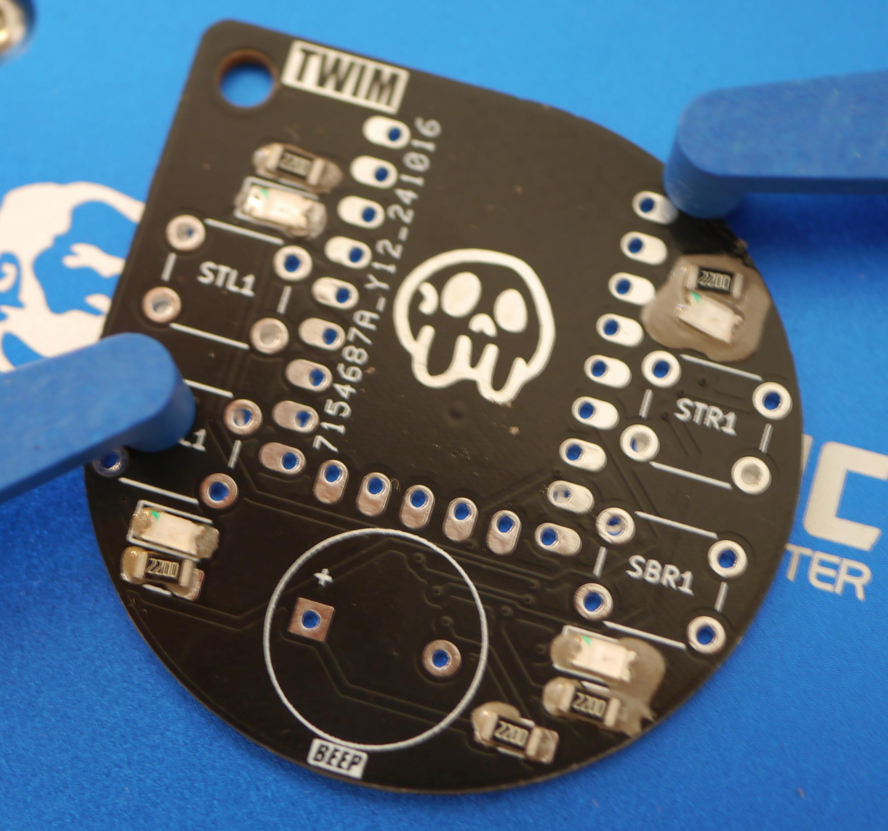
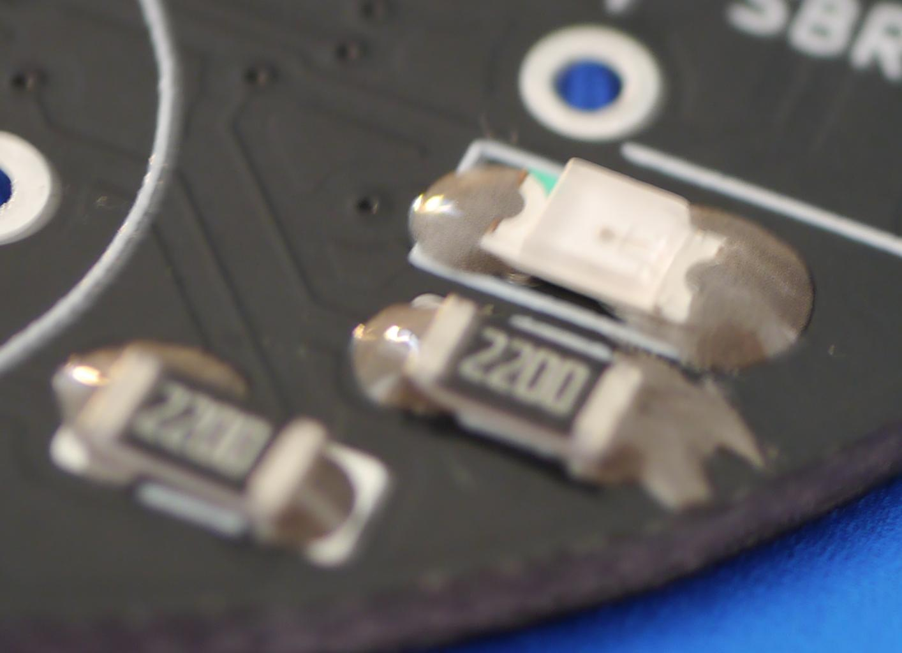
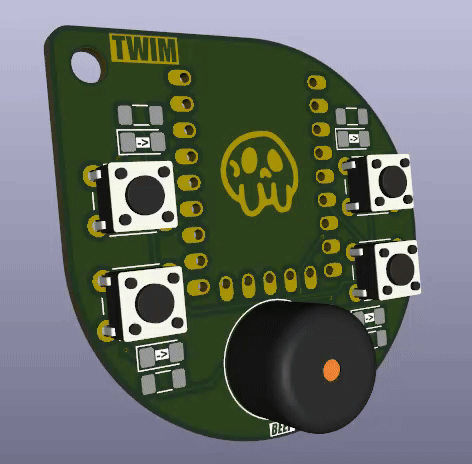
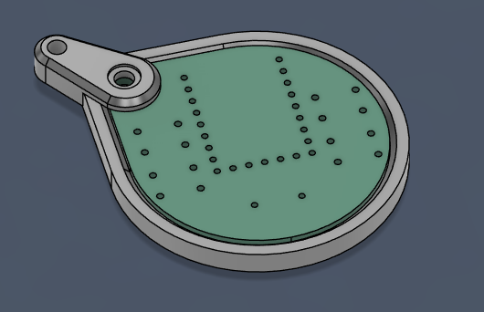
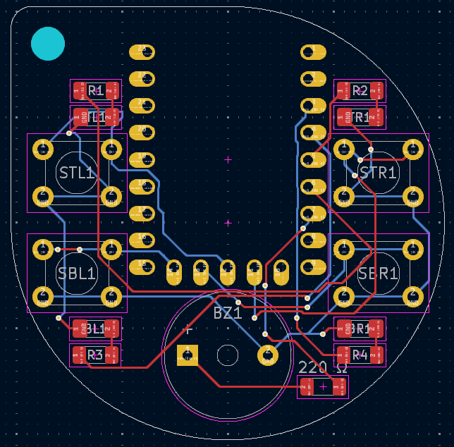

Fun Projects
Creative and experimental micro-projects built to explore new technologies, reflow techniques, and embedded controllers.
Simon Clone Keychain
Skills: PCB Design, CAD, Embedded Systems, SMD Hot-Plate Reflow
A spooky, miniaturized clone of the classic electronic memory game in a 41mm keychain form factor powered by an RP2040 microcontroller.


Inspired by nostalgia for the handheld electronic Simon game, I set out to build a wearable version. To make the build technically challenging, I aimed to miniaturize the circuit as much as possible while maintaining tactile feedback and audible tones.
This served as an ideal testbed for fine-pitch surface-mount (SMD) soldering. Instead of bulky 5mm through-hole LEDs, I used 1206-package SMD LEDs (3.2mm × 1.6mm) paired with micro tactile switches.

Due to the compact footprint and miniature pad geometries, hand-soldering each joint with a standard iron was impractical. Instead, I populated solder paste and components before soldering the entire board using an adjustable PTC heating reflow plate. Following a controlled temperature ramp allowed the flux to activate smoothly and the low-temperature (138°C) bismuth-tin alloy to wet evenly without thermal shock.


To protect the rear component leads and prevent snagging in a pocket, I designed a slim protective snap-fit case in Autodesk Fusion 360 and 3D printed it.



Firmware source code, STEP models, and Gerber manufacturing files are available on GitHub.